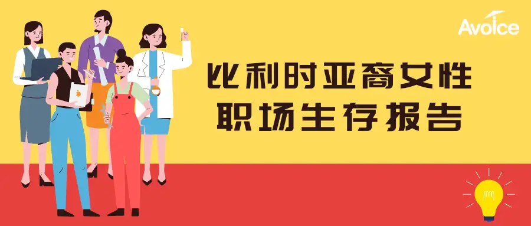
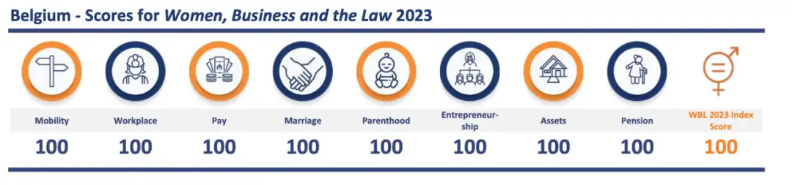

摘要：
比利时有着普遍性别友好的职场环境。在2023年世界银行发布的全球性别工资指数中，比利时以79.6%位列性别工资差异较小的前10（名）。尽管总体向好，但现有研究却未能在族裔视角下充分呈现与分析女性职场生存情况。基于此，本文选取比利时增长潜力较为强劲的移民群体之一——亚裔女性为主要研究对象，通过文献分析等定性研究方法，研究在比亚裔女性群体概况、职场待遇与权益保障、工作环境等情况。帮助在比利时和即将赴比工作的亚裔女性厘清比利时用工政策，现有以及未来困难与挑战，谋求亚裔女性职场合理权益与福祉，促进亚裔女性职场影响力的提升。
比利时亚裔女性概况
分类及特点
学界对亚裔女性群体的界定多样，主要围绕来源国、移民代际对亚裔女性群体进行分类。从总体上来看，在比利时亚裔女性被普遍定义为“移民”；从来源国来看，比利时亚裔女性主要指来自以中国为主要来源国的东亚、印度及泛南亚地区、东南亚的亚洲血统女性；从移民代际来看，分为第一代移民和第二代移民；移民之中又存在是否持有比利时公民身份的区别。
定义与分类反映了该群体的以下特点：
（1）群体中种族、文化、语言多样化，构成复杂，受教育水平参差；
（2）因为外貌、语言等外部特征被识别为外来群体；
（3）职业选择、职场发展易受制于公民身份的获得；
（4）人数正在增长，群体不断壮大，受教育程度不断提高。
这些特点也从一定程度上反映出比利时亚裔女性群体所面临的挑战，例如，语言问题阻碍职场发展、种族歧视、性别歧视、强家庭依附性带来的低社会参与等问题。
受教育程度
比利时亚裔女性移民群体的教育背景存在较为明显的代际差异。
一代女性移民受经济社会发展条件限制，普遍文化程度较低，并且由于成长环境原因，对于比利时通用语言（如荷兰语、法语、德语等）仍存在使用障碍。二代女性移民
群体受经济条件改善、对迁入环境的适应性提升、互联网普及、家庭期望与重视等因素影响，受教育程度普遍高于一代移民群体。作为二代移民，她们有较高的语言水平，通过早期的商业经验得以建立良好的“本土化”基础（Dongen，2018）。并且，许多二代女性移民的父母会倾向于为子女提前规划职业，例如医生、会计、教师等社会地位相对较高的职业，旨在增加子女的社会流动性（Pang, 1998）。同时，国际间友好交流合作加深、优质教育资源扩散、相对畅通的人才流动渠道也吸引了更多留学生前往比利时接受高等教育并成为其新一代移民。
就业情况
受教育、经济等因素影响，亚裔女性群体就业情况也体现出代际区别。整体上来看，研究发现，与本地移民相比，第一代移民不仅在就业方面受到严重影响，而且他们的后代在进入劳动力市场方面仍然面临严重困难。在其他方面，第一代移民的就业差距比第二代移民更为明显(Piton & Rycx, 2020)。
第一代女性移民主要参与以家庭或亲友为单位的小微个体经营。这些经营的特征为工作时间长、内容繁琐压力大、自我实现感弱、自我价值低，仅能维持家庭基本生活（Pang, 1998）。这类的经营主要属于服务业，以家庭餐馆、亚洲超市、按摩店、理发店、护理，以及家政保姆为典型。随着个体经营的激烈竞争，新移民数量的增加以及种族歧视等问题涌现，比利时华人移民也尝试在其他领域进行初创，如服装制造和分销，进出口业务以及中国制造产品的批发分销等（Dongen，2018）。总体上看，第一代女性移民数量比同时代男性移民人数相对较多，例如来自泰国的第一代移民中体现出的女性主导的特点（Fresnoza-Flot, 2022）。亚裔女性需要承担更多的家庭角色，如全职主妇，这使得一代女性移民需要贡献更多的自我时间或是更加远离职场 。值得注意的是，在比利时，即使是家庭工作也有正规化（formal）与非正规化(informal)，有证(documented)与无证(undocumented)之分。正规化且有证的工作是政府记录在案，受相关法律政策保护的家庭工作。而非法非正式是指在通过黑市或中介公司无工作签证却可以开始工作的现象。这样的工作往往在法律的保护范围之外，也不会被政府记录在案，是大多数一代移民或是尚未取得工作签证的移民寻找工作的主要方式(Magalhães, 2017)。
而新一代女性移民则拥有更多职场选择，不再拘泥于家庭式的经营，或是受制于传统社会分工观念对女性束缚。这一类女性的职场选择呈现出现代女性以及现代职场的特质，如自由择业、更高的报酬及待遇、更完善的制度保障、更理想的职场与生活平衡度等等。
职场待遇与权益保障
劳动保障
比利时移民雇佣有着严格的劳动力市场监管，以及与本地人就业差距的问题。尽管比利时为移民提供正式进入劳动力市场以及进入社会保障体系的渠道，但比利时拥有欧洲监管最严格、制度化程度最高的劳动力市场 (OECD, 2013；2016）。相关法律法规限制了从事相对低薪工作的人数，这也减少了外来移民的工作机会。
此外，和标准就业形态相比，这些低薪工作几乎不需要正规培训，而且几乎没有额外的福利或工作确定性。其中尤其以较多亚裔女性从事的服务业工作或家庭经营类型工作为典型。这造成了根本性的问题：在比利时，出生在外国的人和出生在比利时的人之间的就业差距是欧盟国家中最高的地区之一(Lens, Marx & Vujic, 2018)。在职贫困已成为一种长期状况，尤其是在从事低质量工作的亚裔女工中(Liu, 2019)。
尽管有多种移民融入政策，但比利时的劳动力市场融入表现不佳。在国际比较中，比利时是全球移民雇佣率最低的国家之一(Lens, Marx & Vujic, 2018; Timmerma等)，而非欧盟的移民劳动力情况更糟糕（Timmerma等）。基于以上的政策和法规情景，亚裔女性，尤其是未取得比利时公民身份的群体在比利时的劳动力融入与劳动保障较为困难。
不过，比利时确实存在诸多致力于加强移民劳动保护的组织及倡议。例如，欧洲移民妇女网络 (European Network of Migrant Women) 为移民女工提供法律和社会支持，包括在获得医疗保健、教育和就业机会方面的帮助。此外，国际劳工组织 (International Labour Organization) 等其他组织也致力于更广泛地促进移民工人的权利。
医疗保障
尽管欧盟一直不余遗力地倡导完善针对移民的卫生政策，到目前为止，比利时
仅在有限程度上解决了种族健康不平等问题。比利时已将所有旨在改善移民健康的欧洲指令纳入其立法，但其对多样性的承诺相当薄弱。关于种族健康不平等的数据相当稀少。且为避免加剧长期存在的紧张种族关系以及政见冲突，以及公共机构在数据搜集、利用、发布中带来的对个人隐私权的侵犯，比利时特别立法——《通用数据保护条例》（General data protection regulation）禁止公共机构搜集种族数据。因此，很少有公共卫生政策真正认识到文化多样性的重要性，以及移民与少数民族的需求 (Dauvrin等，2012).
此外，比利时的大多数公共卫生计划（如国家抗癌计划）或蓝图都没有关注移民的特殊情况，这导致卫生服务、预防和健康促进的提供不足。医疗保健组织没有正式义务关注多样性，导致隐含否认医疗保健歧视。尽管存在反对种族主义和歧视的法律，但平等机会和反道德对种族主义中心仅起咨询作用，不被视为执行机构。此外，在两个最重要的卫生执行机构中，没有对提高公平性和多样性做出强有力的承诺。最后，国家资助的跨文化调解员仅限于医院，门诊几乎没有口译服务(Dauvrin等，2012)，这对于语言掌握欠佳的亚裔女性就医造成了障碍。因此，在种族化与性别化的公共卫生计划中，亚裔女性很可能面临不公正的医疗保障。
社会保障
中华人民共和国商务部关于比利时的劳动就业体制介绍中显示：任何被公司雇佣的员工都必须参加比利时国家社会保障体系，除非有相关的国际条约
，例如，从欧洲经济共同体成员国来的工人可以在一定的时间内（最长不超过24个月）仍然只参加自己国家的社保体系。比利时也与其他一些国家，如阿根廷、智利、以色列、波兰、瑞士、土耳其和美国签订了双边协议。所有企业必须在联邦社会保障机构（荷兰语中被称为 "RIZIV"）登记。企业必须按季度缴纳社会保障基金。企业也有义务代扣代缴员工应向社会保障管理机构缴纳的社保基金。社会保障体系资金主要是由雇主和雇员缴纳的社会保障基金组成。雇主须按白领工人总收入大约32.44%的比例；按蓝领工人总收入大约38.44%的比例缴纳社保基金。职工缴纳社保基金的比例为其收入的13.07%（中华人民共和国商务部,2011）。
比利时的社会保障体系包括医疗、病休、失业福利、家庭补贴、产假和法定养老金。这套保障方案提供了比大多数英语国家广泛得多的福利保障。对于在比亚裔女性，比利时将外国职工和其雇主的关系分为两大类：临时借调或长期工作。
在临时借调的情况下，工作关系还是保留在因为组织、重组或控制经营活动的需要而临时派遣员工来比利时的外国公司。员工应服从外国公司的安排—他/她仍不断地接到外国公司管理层的指令并需要向其汇报工作。临时借调的职员不能是比利时公司的职员。借调职员的薪水仍由外国公司支付。此外，借调的职员继续享受外国公司所在国的社会保障制度。
如果是长期工作，外国职员成了比利时公司的员工，并列在比利时公司的工资表上。职员接受本地比利时公司的指令并在比利时公司管理层的职权下开展他/她的工作。员工也享受比利时的社会保障制度。（中华人民共和国商务部, 2011）
然而，对于受雇于小微营生的亚裔女性社保缴纳情况，尚未有明确数据支撑，也未有相关政策以保证该群体的社会保障。在世界大多数地区，对于长期从事工资低无保障（即非正规就业）的女性员工或者不具备独立经济能力的女性，很难完全被社会保障支持性措施完全覆盖。
假期情况：以女性产假为例
目前，有关受雇于小微营生的在比亚裔女性产假情况数据不足，以下主要是对比利时企业产假情况的总体介绍。
比利时职场女性在工作期间产假最长可为15周。但生产前1周和生产后8周的假期是法定的，另外6周在产前或产后的假期是可选择的。
在某些情况下，产假也可以被父亲假代替。公司不会在产假和代替产假的父亲假期间支付工资。关于产假期间的津贴是由社会保障体系中一笔特殊基金支付。如果员工怀孕，公司只有在有正当理由并且这些理由与怀孕无关的情况下，才能终止劳动合同。父母双方-即母亲或父亲-可以在孩子出生或收养后的四年内，享受三个月无薪父母假期（如果孩子有严重残疾的话，则为八个月）。
此外，父亲在孩子出生后30天内有一个特别的10天“父亲假期”。这10天的前三天由公司支付全薪，余下七天的大部分工资是由社会保障体系中一笔特殊基金支付。
亚裔女性职场权益受法律保护情况
1
相关条款
比利时同其他大多数国家一样，对某些群体的职工提供保护。例如，如果女职工怀孕被其雇主得知后，女职工就被赋予了一些特殊权利。这些权利包括在得知职工怀孕后到产假结束后的一个月后，禁止雇主基于怀孕的原因终止劳动合同。如果确实存在严重的终止劳动合同的理由，并且这些理由与职工的身体状况无关，那么特殊保护就不存在了。如果这些理由并不能得到证明，终止劳动合同只是基于员工怀孕的情况，除了可以行使其他权利外，女职工有权得到相当于6个月工资总收入的补偿。
同样，在父亲假期间劳动合同也不能由于上述理由而被终止。如果违反上述禁止性规定的话，员工除了可以行使其他权利外，有权得到相当于6个月工资总收入的补偿。
2
WBL指数
WBL指数由世界银行提出，由女性（women），商业（business），法律（law）三个维度构成。其旨在研究
法律对女性工作生涯不同阶段产生的影响 (世界银行The World Bank，2023)。《2023 年女性、商业和法律(2023: Women, Business, Law) 》提出了一个涵盖 190 个经济体并围绕生活构建的指数职业女性的周期。总共有 35 个问题在八个指标中得分。然后计算总分各项指标取平均值，100分代表最高分（数据参考法律法规）。该指标适用于主要商业城市（如布鲁塞尔）。其他司法管辖区可能适用不同的规则，因此当地立法应该审查。
基于这种方法，比利时得 100 分（满分 100 分）。比利时的总分高于经合组织高收入经济体的区域平均水平 (95.3)。在经合组织高收入地区，有有 14 个经济体在满分 100 分中获得 100 分。

图：2023年比利时WBL得分
从左至右分别为流动性、工作场所、薪资、婚姻、亲子关系、企业家精神、资产、养老金、WBL指数分数等九个维度 （图源自： https://wbl.worldbank.org/en/data/exploreeconomies/belgium/2023)
该数据表明：
（1）️相对优势：当涉及到对行动自由的限制、影响妇女决定工作的法律、影响妇女薪酬的法律、与婚姻有关的限制、影响妇女产后工作的法律、对妇女创业和经营的限制、财产和继承方面的性别差异以及影响妇女退休金数额的法律时，比利时获得了满分。
（2）同时，该数据存在一定缺陷：该数据针对群体和调查问题中并无涉及到外国移民和外国务工人员的情况的调查，亚裔女性数据依然处于缺失的情况。长期以来，国际女性移民的被认为是婚姻和家庭因素驱动，而她们在劳动力市场和经济活动中所做的贡献并没有被纳入研究范围 , 有研究者指出， “尽管女性移民的存在被承认，但是她们总被认为是附属的，为了家庭团聚而移民的人。她们对移民国经济和社会上所做的贡献也因此被忽视“(李其荣，2008)。
职场边缘化与歧视
亚裔女性在比利时劳动力市场中受到多重边缘化与歧视。边缘化具体表现为其话语、劳动不被看见，歧视可以具体表现为因为性别、语言文化、种族特征的非主导性导致的晋升受阻或权益受损。这两者相互交叉，共同影响着亚裔女性在比利时的职场生存状态。例如，对于参与小微营生的亚裔女性，她们往往被官方登记为“家庭主妇”。她们的贡献也被笼统地看作丈夫或其他家庭成员的贡献(Pang, 1998)；一些受雇于企业或政府的亚裔女性，她们的话语权以及声音往往会因为其外形特征而变得微弱。值得注意的是，这些困境具有长期性特征。
族裔视角下的歧视与边缘化
自20世纪90年代以来，许多研究从种族角度揭示了这一点。一项1994年的研究发现，在移民群体里，中国人相对不容易被识别，尤其是中国女性。她们在比利时的移民公共话语和国家政策中似乎不存在，也没有自己的合法身份或发言权。往往在政策制定中被识别为“他们”。这种“我们/他们”的二分法并非比利时学者和政策制定者所独有，而是存在于社会科学（Allen, 1994）和许多欧洲国家的移民政策中（Lutz, 1994；Ramakers,1996）。值得注意的是，学界对于种族歧视的研究主要集中在摩洛哥人和土耳其人这两大群体，亚裔女性群体的研究很大程度上隐形。尽管研究对象的种族不同，研究结果也折射出了移民在比利时遭遇困境的共通性。例如，在教育方面，外来移民青年的表现不如本土青年。同时，移民在就业机会方面也处于不利地位。平等机会和反对种族主义中心在1997年所做的⼀项研究结果表明，在招聘半熟练⼯作时，优先对待本地人而不是（男性）移民候选⼈。
对身份差异的强调往往强化了比利时的排外主义和民族主义，而亚裔女性的外表、语言差异往往使得她们成为结构性不公的受害者 。第一代亚裔女性由于语言障碍，时常被比利时人区别对待。然而，即使二代亚裔女性符合正式融合标准（至少在公共场合说比利时官方语言、行为准则相似），她们仍不断被告知其差异性，例如，夸大她们身上异国情调，从而夸大中国和比利时女性之间的差异。此外，许多华裔女性依旧被刻板印象当成外来者，否认她们在此定居的事实。例如，根据Pang （1998）的访谈，一些将比利时官方语言作为母语的二代亚裔移民会被当成外来者，被夸赞语言熟练。
性别视角下的歧视与边缘化
在合法、正式的职场环境中，比利时女性在管理和高级职位上的代表性仍然存在着不平等情况。比利时十分之九的首席执行官是男性。女性担任的管理职位数量是整个欧洲最少的地区之一。这背后的原因与职位工资无关，而是指向许多宏观经济社会因素，例如社会经济总体发展水平、分配制度等。不合理的儿童保育价格、无充足的儿童保育设施以及缺乏灵活的工作时间安排是造成这种情况的一些主要原因（Warburton，2019）。结合上文的族裔问题，“亚裔”，“女性”的双重身份是不少职业女性的发展障碍。尽管，每年比利时的男女平等研究所都会发布有关比利时性别薪酬差距的新数据，并欢迎认为自己受到了歧视的人们，向男女平等研究所
提出投诉（男女平等研究所，2015）。但以上完备的法律和申诉系统中只有荷兰语和法语的申诉方式，对于当地非母语者如亚裔女性群体并不友好，也在一定程度上增加了寻求帮助的困难程度。
并且，比利时也存在着许多从事非正式或是不合法工作的亚裔女性。这些女性往往是以经济剥削和性剥削为主的人口贩卖的受害者，其中泰国女性的受害者数量较高。一项欧盟移民和内政事务的调查显示，在比利时，尽管明显的卖淫现象减少，但是这些女性被迫在私人住房、陪护服务、按摩沙龙等地方从事隐性卖淫的现象有所增加（比利时欧盟委员会，2024）。这将使得大众对于亚裔女性的刻板印象加重，会认为亚裔女性是“白人的附属品”、“屈服于金钱的”、“简单易得的”。同时受制于高度体系化的人口贩卖与劳动力黑市，身在其中的亚裔女性被界定为“黑户”，游离于法律保护与政策监管之外，遭受被剥夺权利、艰难困苦、歧视和暴力等问题。（李其荣，2008）。
歧视与边缘化问题的初步努力
值得庆幸的是，随着亚裔女性群体的意识觉醒与壮大、学术研究的深入，这些长期性难题的解决方案正在逐渐清晰。
越来越多的亚裔女性开始身体力行以扭转歧视。例如，疫情期间亚裔女性在推特等社交平台上发起“我不是病毒”的话题，通过记录疫情期间的生活或想法的形式，以消除其他族裔对亚裔的偏见(Times, 2020)。同时，学术研究也开始聚焦于这一群体，研究话题覆盖了在比亚裔女性的宗教信仰、割礼问题、饮食习惯与营养摄入、社会隐形等问题，这也为后期的研究与政策的制定提供了研究依据。
结语
总体而言，比利时有着较为健全以及人性化的劳动、医疗以及社会保障体系，但也存在着女性难以打破“职场天花板”的困境，以及因种族、身份、职业类型的不同而造成的职场环境和职业体验的差异。这些差异在亚裔女性身上表现较为明显。我们在调查研究过程中发现，受制于法律对种族数据搜集的禁止以及结构化歧视，当谈及到少数族裔女性、残障女性、劳动阶层女性时，相关数据相对难以获得。性别、种族数据缺口的存在，让亚裔女性的声音被掩盖在主流社会经济活动之外。因此如何在现行法律框架下，尽可能多地搜集在比亚裔女性职场生存数据、描绘其职场生活场景、展现及解决其因为性别、种族、身份合法性等因素所遇到的职场正当权益困境，或可以成为我们长期努力的方向。
References
内容来源｜ 钱思宇 杨政睿 曾琳源
排版/封面｜於舟